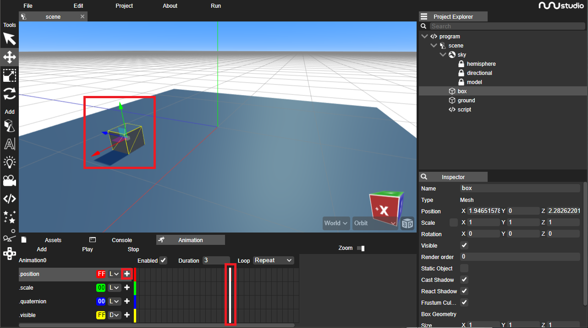

In this guide we will learn how to use the timeline in nunuStudio. It can be used to animate any kind of object inside of nunuStudio. Timeline animations are composed of tracks and keyframes. Each track holds multiple keyframes for a specific attribute of the object, the keyframes are points of the animation that represent the value of that attribute in that specific time point.
The animation engine interpolates the values between the known keyframes for the animation to be smooth. The animation engine suports multiple interpolation modes allowing the user to select how the value between keyframes should be interpolated.
To create an animation select an object in the editor, select the Animation tab and click the add animation button. This will create a new default animation with the attributes position, rotation, scale and visible with a duration of three seconds.

To create a new keyframe drag the timeline bar to the desired time, move the object to the desired position (or change the desired attribute) and click on the + button next to the attribute name that you want to create a keyframe for.
Use the play button to preview the animation. The animation can be configured repeat after it is finished, never repeat or play in ping pong. When it is configure to repeat in ping pong the animation is played forward and the backwards infinitely.
To add new attributes to the timeline right click the animation name and select "Add track" this will create a window asking for the object attribute to be edited. Pretty much every attribute of an object or resource can be animated using the timeline feature.
In the example bellow the scene has multiple resource and object being animated using the timeline editor of nunuStudio. To try this example in the editor you can download the project file or open it on the Web Editor.
Animations can be controlled from scripts every object has a mixer property that is used to controll/mix animations to this object can be used to control the playback of all animations running using the play(), pause(), stop() and setTime(time) methods.
var cameraAnimation;
var camera;
function initialize()
{
cameraAnimation = true;
camera = scene.getObjectByName("camera");
console.log(camera);
}
function update(delta)
{
if(Mouse.buttonJustPressed(Mouse.LEFT))
{
cameraAnimation = !cameraAnimation;
if(cameraAnimation)
{
camera.mixer.play();
}
else
{
camera.mixer.pause();
}
}
}When more than one animation is active the system automatically interpolates between the state of each attribute for all the animations available. Animations speed can be different for each animation playing simultaneously. Each animation timeline is processed indepedently. External file (e.g. fbx, dae, gltf) may contain keyframe animations that are imported with the objects and can be edited using nunuStudio timeline.